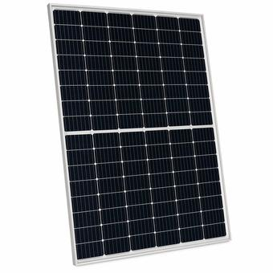
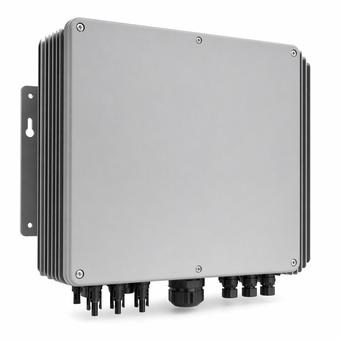
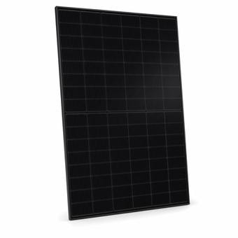

Solar, Wind & Hybrid Site Equipment
Modules, inverters, trackers, MV cable, and GSUs for solar, wind, and hybrid sites — including FEOC-clean sourcing options for ITC-eligible projects.
What's driving solar & wind equipment
FEOC and domestic-content rules have become the central sourcing variable for solar and storage procurement. Treasury's first "material assistance" safe-harbor guidance gave developers a workable path to document component sourcing and keep ITC eligibility, after months of uncertainty — but it also means sourcing decisions now carry compliance weight they didn't a few years ago.
Section 301 tariffs and domestic-content incentives are pulling inverter manufacturing toward the US, and utility-scale module pricing has climbed as buyers weigh tariff exposure against domestic-content bonuses. Both trends show up directly in the lead times and pricing on this catalog.
Inverters, DC:AC ratio, and clipping
Most utility-scale sites now oversize the DC array relative to the inverter's AC rating on purpose — a DC:AC (or ILR, inverter loading ratio) of 1.2–1.3 is typical. The inverter simply caps ("clips") output on the highest-irradiance hours rather than running below capacity most of the day, and the energy lost to clipping is usually smaller than the energy gained from the extra DC capacity everywhere else. Getting the ratio right is a sizing problem before it's a procurement problem — run it on the solar string sizing calculator before locking a BOM. See Inverter Clipping Ratio Explained for the full breakdown.
Fixed-tilt vs. tracker: what changes on the BOM
Single-axis trackers add torque tubes, slew drives, motors, and controllers to what a fixed-tilt racking system doesn't need at all — more equipment, more moving parts, more O&M line items. In exchange, trackers typically add somewhere around 15–25% more annual energy yield versus fixed-tilt at the same DC capacity, which is why they now dominate new utility-scale ground-mount design in most of the US despite the added structural BOS complexity. The right call comes down to land cost, wind/snow loading at the site, and whether the extra yield outweighs the extra maintenance surface.
GSU transformers, MV collection, and interconnection
A solar or wind site's GSU (generator step-up) transformer steps the site's collection voltage up to transmission level at the point of interconnection — a different role than a data center's on-site GSU, but the same equipment class and the same multi-year lead times; see Pad-Mount vs. GSU Transformers for how the two compare. Getting from an interconnection request to an executed agreement is frequently the longer critical-path item on a renewables project, not the equipment itself — see The Grid Interconnection Process, Explained, or the region-specific timeline for MISO and ERCOT, the two regions carrying the most new wind, solar, and storage interconnection volume.
FEOC and Buy America, together
FEOC material-assistance documentation and Buy America / BABA domestic-content rules are two separate federal programs that often apply to the same project at once — one triggered by ownership/control of the supply chain, the other by how the project is funded. See FEOC Compliance for Solar & Storage for what to document for ITC eligibility, and Buy America / BABA for the funding-triggered version of the same problem.
Renewable plant equipment by category
Tools for renewables engineers
Common questions
What does FEOC-clean sourcing mean for solar equipment?
It means the component's sourcing has been documented to meet Treasury's material-assistance safe-harbor guidance, supporting ITC eligibility — flagged on eligible modules, inverters, and PCS in this catalog.
What's a good inverter DC:AC (clipping) ratio?
Most utility-scale sites run 1.2–1.3, oversizing the DC array on purpose so the inverter clips only during peak-irradiance hours. The right number depends on site irradiance profile and inverter cost — model it before locking the BOM.
Fixed-tilt or tracker — which is better?
Trackers typically add 15–25% annual energy yield over fixed-tilt at the same DC capacity, at the cost of more moving parts and O&M. The right choice depends on land cost, site wind/snow loading, and whether the extra yield outweighs the added maintenance surface.
What's included in the Renewables sector?
Solar modules, inverters and PCS, trackers, structural BOS, and GSU transformers — 673 configurations across 42 equipment families.
How long is the lead time for a FEOC-clean inverter?
Around 20 weeks industry-wide as of mid-2026. Configure the exact spec for an indicative lead time.
Top renewables families
What's moving in renewables

Treasury's first FEOC guidance gives developers a workable path
Initial "material assistance" safe-harbor guidance clarifies how solar and storage projects can document component sourcing to keep ITC eligibility, easing months of procurement uncertainty across the industry.

Tariffs and FEOC rules are reshaping the inverter industry
Section 301 tariffs and domestic-content incentives are pulling inverter production toward the US, with manufacturers including Power Electronics and SMA Solar expanding American factories to capture the bonus credit.

US module assembly prices hold steady amid FEOC-driven asset sales
Median US-assembled module pricing held at $0.30/W through early July as Trina, JA Solar, JinkoSolar, and LONGi restructured or divested US manufacturing stakes to preserve FEOC compliance, while a new AD/CVD petition targets Korean-origin cells.
Specifying a solar or hybrid site?
Paste your equipment list — every line is matched against 673 renewables reference configurations, with FEOC-clean options flagged, so you can check what you have specified.
Every family, with its specs and lead time
Each family below has its own reference page: how it is specified, the standards it is built to, its indicative lead time and its market price band.
Combiners & Protection
GSU & MV Transformers
Inverter & PE Components
Inverters & PCS
Module & BOS Components
Monitoring & SCADA
Solar Modules
Structural BOS
Wind Components
Wire & Cable